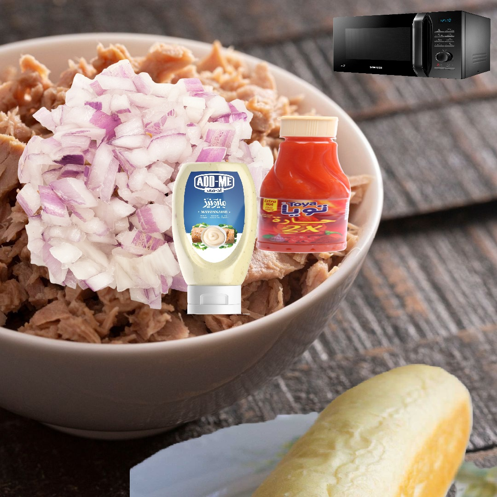

Home
Tuna & Onions Recipe

Description
Recipe my sister made, it conists of chunky tuna mixed with diced onions, Toya, and mayonnaise. Eaten with microwaved phino. She used to eat it relgiously back home, now i do. Careful with the mercury though, don't eat too much or you'll get sick!
Ingredients:
- A single can of tuna, preferably chunky.
- Tablepoon of toya.
- Tablespoon of mayonnaise.
- Half a medium sized onion.
- Pinch of salt.
- Pinch of blackpepper.
- 1 - 2 fino bread.
Steps:
- Dice onions.
- Put tablespoon of Toya.
- Put tablespoon of mayonnaise.
- Put a pinch of salt and pepper.
- Put the diced onions.
- Mix with spoon, but don't do it too much so it doesn't become mushy.
- Heat up fino bread in microwave.
- Enjoy!